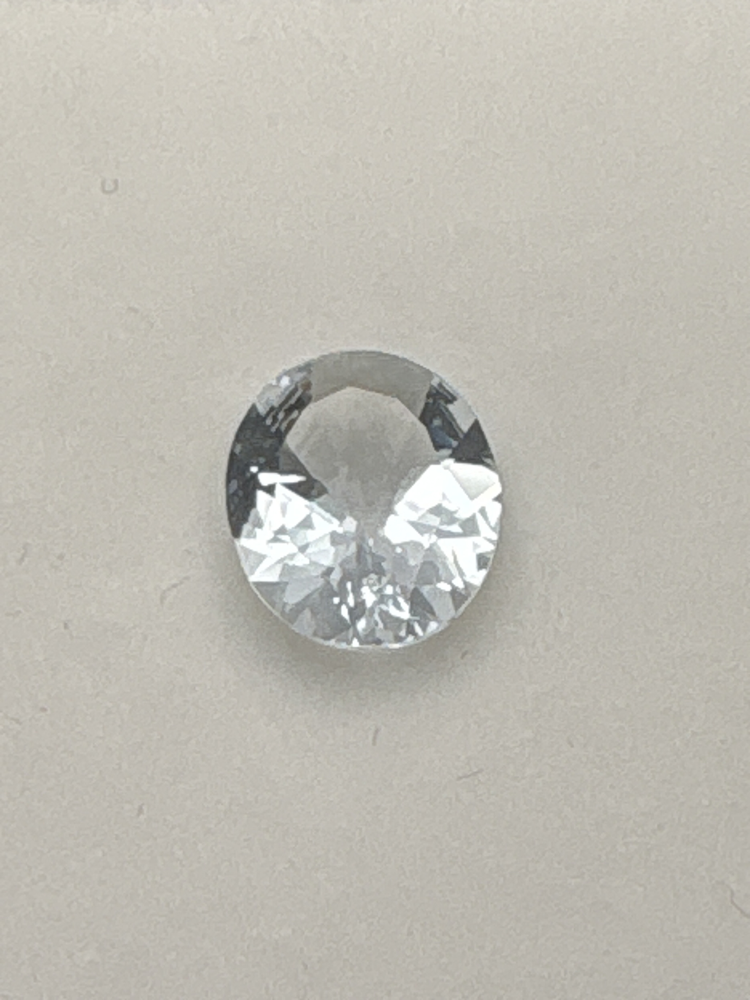

The Gem Drawer › No. 99

A 10 x 11 mm oval labeled aquamarine that photographs colorless.
| Catalogue no. | #99 |
|---|---|
| As labeled | Label says "Aquamarine" - MISMATCH: stone appears colorless, not blue; possible goshenite or other colorless material - see notes |
| Shape / cut | Oval |
| Weight | 2.09 (per label) |
| Measurements | 10x11mm oval |
| Colour | Colorless/clear as photographed (not blue - see notes) |
| Clarity / condition | Not recorded |